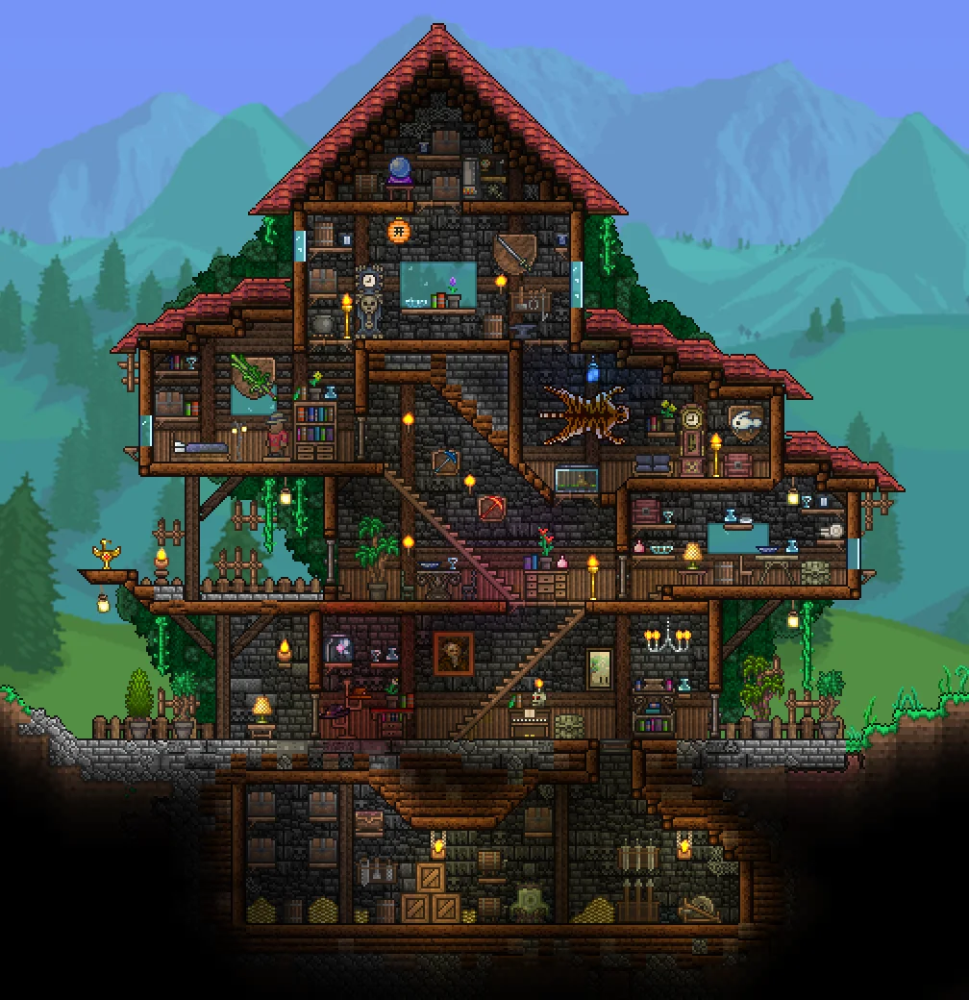

What it Is
For anyone who doesn't know, Terraria is a pretty old game—over a decade old in fact. It originally released all the way back in 2011 by an indie team called Re-Logic. Despite it's age, there's a reason why Terraria still talked about today. Though people joked or even criticized it as being "2D Minecraft", the gameplay of Terraria is quite different from its slightly older peer. The focus of the game revolves around exploration, upgrading combat gear, and fighting various kinds of bosses. Minecraft expected players be cautious and avoid enemies and the night. But in Terraria, the player is instead incentivized to hunt down opponents and seek out new areas and treasure for as far they can survive. The unique gameplay combined the many things you could discover or fight made Terraria a fast success, soon becoming one of the most popular games on Steam at the time. Since then, the game has recieved several ports and still recieves updates to this year.

"Terraria is a land of adventure! A land of mystery! A land that's yours to shape, defend, and enjoy." - Official Terraria Wiki
The worlds of Terraria can range from big to small depending on your choice. They aren't just wide, but also long and deep (like, so deep that you can literally travel to THE Hell itself). There's also many different biomes that exist both on the surface and in the caves, and you can even find stuff in the sky! There is a myriad of different armor and weaponry that you can use to create your own fighting style. When you're ready, you can fight all kinds of different bosses at different difficulties to gain money and more items for crafting. While the game is mostly about exploring, you can also find and craft furniture and blocks to build a cool house for you and your NPCS (more on them in next page).